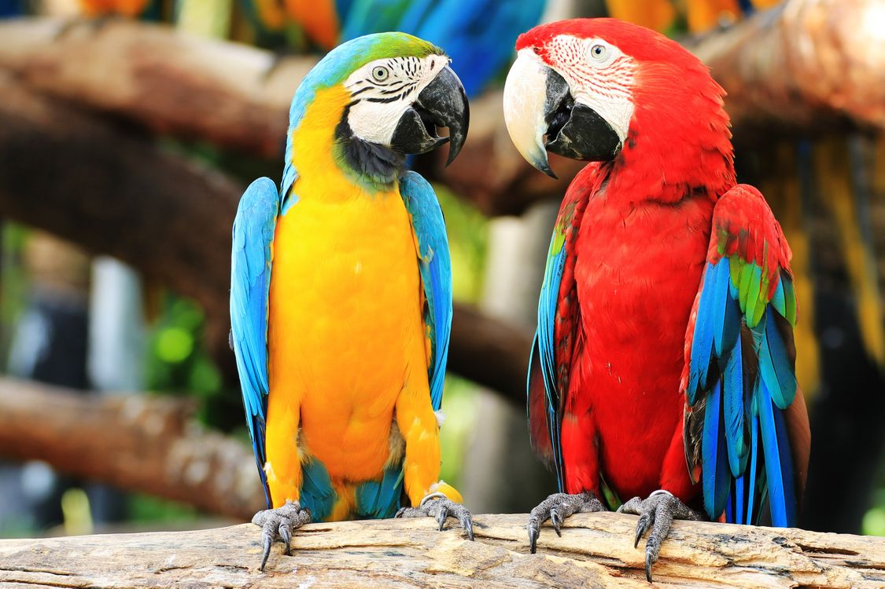

В домашних условиях содержат множество видов попугайчиков. Одни из них довольно распространены, другие встречаются гораздо реже. Крупные, редкие и красивые виды попугаев могут довольно дорого обходиться владельцу. В полную стоимость входит не только покупка попугая, но и затраты на содержание, кормление и лечение.
Рассмотрим наиболее известные и распространенные породы попугайчиков, которые подходят для домашнего содержания:
Мелкие попугаи: волнистые, неразлучники. Средние попугаи: корелла, ожереловый попугай, какарики, розелла. Крупные попугаи: жако, ара, какаду, амазон. 